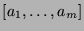
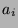
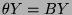
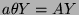

Usage
system A
system B
system(a, A)
system( , A)
| Parameter | Type | Description |
|---|---|---|
| a,  | R | Coefficients |
| A | DenseMatrix R | A square matrix |
| B | DenseMatrix Fraction R | A square matrix |
Returns
Return respectively the systems, ,  and